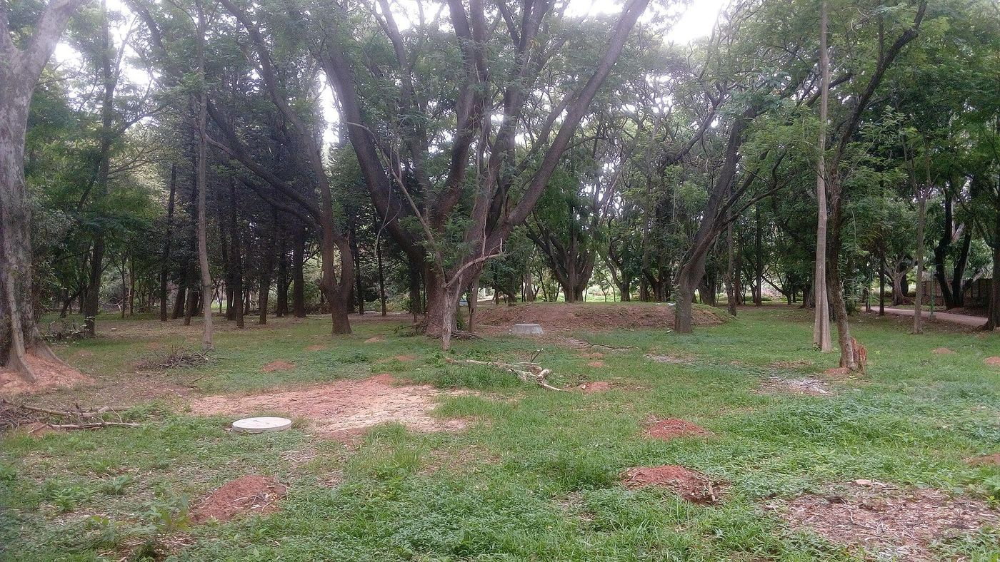

Strategic Framework for Human-Centric Urban Forestry: Evaluating Socio-Economic, Psychological, and Governance Outcomes of the Nagar Van Yojana Ongoing
GIS-based audits · Socio-economic surveys · Well-being assessments
environmentOpen →Research
Verified work only — current research, projects and writing. Where only a title is confirmed so far, the entry says so.

Ongoing
Evaluating the socio-economic, psychological and governance outcomes of the Nagar Van Yojana — GIS-based audits, surveys and well-being assessments towards a monitoring framework. Methodology shown; findings follow as confirmed.
GIS-based audits · Socio-economic surveys · Well-being assessments
environmentOpen →Urban Forestry · Environmental Assessment
environmentOpen →Bengaluru — UHI · GSI · UDI
climateOpen →Field evidence · Implementation
environmentOpen →Bengaluru
environmentOpen →No entries here yet.
Try “forestry”, “Bengaluru” or “policy” — or clear the filters. New work appears here as it is confirmed.
Fieldwork / Visual documentation
Plantation, site maintenance and community use of green spaces — photographed during fieldwork. Individual captions to be added.

.jpg)


Half-formed ideas welcome. Good threads may become entries — with permission.